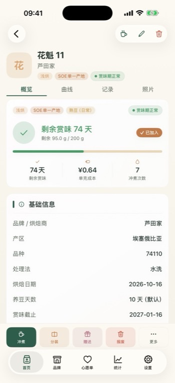
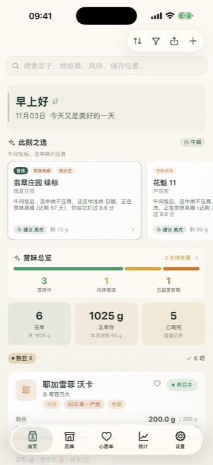
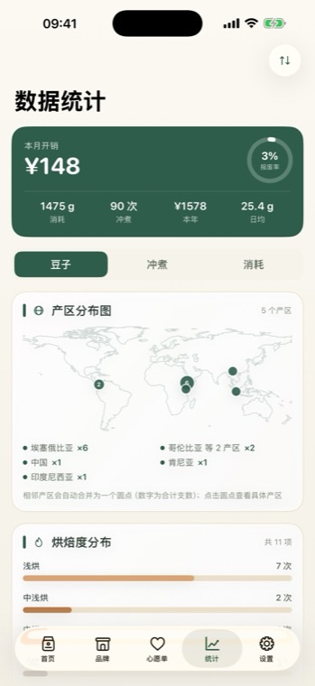
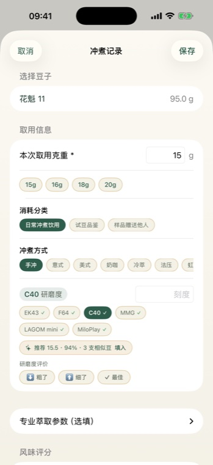
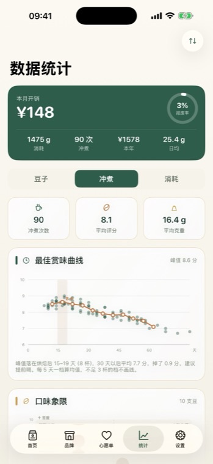
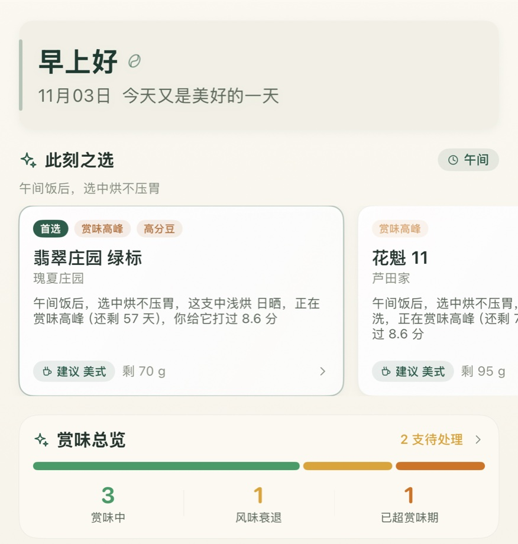
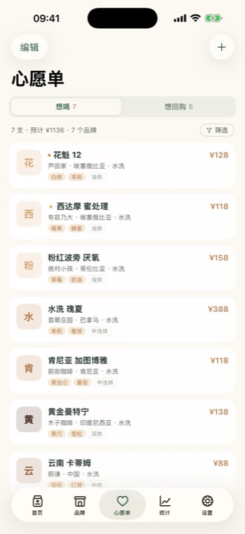

它记得每一支豆，
是哪天烘的。
入库时填一次烘焙日，之后全部自动：养豆还差几天、赏味期剩多少、哪一天该喝掉、什么时候已经太迟。 首页最上面就是所有豆子的状态分布，不用一个个点开算。
·超过赏味期太久的豆会单独提示「冷萃、奶咖或报废」，而不是继续混在待喝列表里。
·开封即变状态，不需要你维护第二个字段。
记下烘焙日期，剩下的交给它——赏味期倒计时、库存自动扣减、每杯成本与评分， 连同「这家值不值得再买」，都在一个地方。



入库时填一次烘焙日，之后全部自动：养豆还差几天、赏味期剩多少、哪一天该喝掉、什么时候已经太迟。 首页最上面就是所有豆子的状态分布，不用一个个点开算。

每条冲煮都记下机型和刻度。再冲同一支豆，它先给你一句「上次 18，偏粗，建议调到 17.5」； 第一次冲的新豆，就按处理法、烘焙度和养豆天数，从相似的豆子里推一个起点，并写明依据是哪几支。
克数、杯数、花费、产地分布，边喝边算清。其中「最佳赏味曲线」会把同一支豆在不同豆龄的评分汇总起来， 告诉你它的甜区在第几天——下次买同一支，就知道该等多久再开。


打开首页最先看到的两块：一个告诉你现在最适合开哪支，一个告诉你哪几支快来不及了。
想喝的进心愿单，喝过的点一下「想回购」。回购条目记着当时的克重、价格、杯数与平均分； 点「再买一次」，表单已经按上次的规格填好，直接生成新批次。

每一次取用都留下节点，这支豆是怎么一点点喝完的，看得见。
克重、水温、时长、评分与品鉴笔记。下次复现好喝的那一杯。
这一年喝过的豆来自哪几个国家，一张地图看完，不用翻清单。
多久买一次、买过的豆喝完了几支、平均打几分。数字比印象可靠。
想试的先记下，喝过觉得好的标回购，一键按上次规格再买一次。
导出成 ZIP 存进「文件」App，换手机时导回来，豆子和记录都在。
所有内容都存在这台设备的沙盒里，卸载即消失。没有网络请求，没有第三方 SDK，照片也不会上传。 正因为数据只在你手上，我们把「导出备份」做得很显眼——换手机之前，记得导一份。